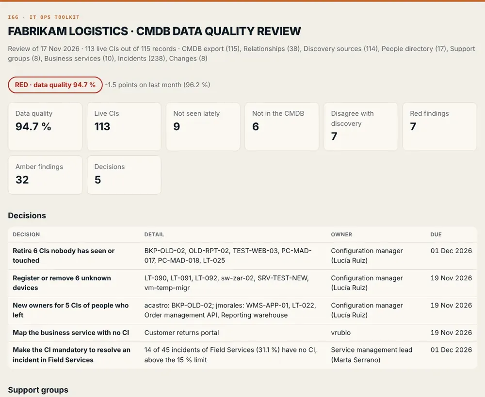

Un servidor SQL heredado y crítico que ningún sistema de descubrimiento veía desde principios de septiembre seguía activo en la CMDB, y la base de datos de informes de Finanzas seguía funcionando sobre él. Así lo detecta la revisión de calidad de la CMDB que acompaña a este post, un proyecto de código abierto que se ejecuta con datos de ejemplo de una empresa ficticia de logística, con sede y sala técnica en Madrid, un almacén en Zaragoza y una oficina comercial en Valencia.
Una CMDB, la base de datos de configuración que registra cada servidor, aplicación y equipo y de qué depende cada uno, solo sirve si la gente se fía de ella. La revisión compara cada ficha activa con lo que ven Active Directory, Intune, vCenter y un escaneo de red. Un servidor que nadie ha visto últimamente se marca como obsoleto; si además ningún ticket, cambio ni sistema activo lo necesita, pasa a ser candidato a retirar. El SQL heredado no lo es, porque algo sigue funcionando sobre él, así que el hallazgo es rojo y va a su grupo de soporte con dos días de plazo.
Seis equipos sin ficha y un portátil retirado en septiembre
El mismo cruce encuentra seis equipos vistos en la red en los últimos 45 días que no tienen ficha: una máquina virtual de una migración, un servidor de pruebas, un switch en Zaragoza y tres portátiles. Un portátil retirado en septiembre sigue conectándose a Intune. Siete fichas no cuadran con el descubrimiento: tres máquinas virtuales a las que se cambió la dirección, tres PC actualizados a Windows 11 cuyas fichas siguen diciendo Windows 10 y un portátil que cambió de sede.
Esas tres actualizaciones se hicieron con un cambio, pero las fichas se tocaron por última vez en septiembre. La revisión lee los cambios del mes y marca cada uno que se implantó después de la última actualización de la ficha, de modo que el hueco aparece en cómo se cierran los cambios y no en las personas que hicieron el trabajo.
Dueños que se fueron y un servicio sin nada asociado
Cinco fichas pertenecen a dos personas que ya no están, una de ellas la API de gestión de pedidos, lo que convierte el hallazgo en rojo. La aplicación de informes de Finanzas funciona sobre un servidor retirado en junio, y la semana pasada se implantó un cambio en ese servidor. El portal de devoluciones de clientes, un servicio de negocio crítico, no tiene ninguna ficha asociada, así que una caída no se podría relacionar con él. En Field Services, el 31% de las incidencias del mes se registraron sin elemento de configuración.
Cada ficha recibe una nota de calidad: la parte de los campos que necesita su clase, si el descubrimiento la ve y coincide con ella y, en aplicaciones y bases de datos, si tienen sobre qué funcionar. La demo saca un 94,7%, 1,5 puntos menos que el mes anterior, con 7 hallazgos rojos y 32 ámbar. Termina con cinco decisiones: retirar seis fichas, registrar o quitar seis equipos, nuevos dueños para cinco fichas, asociar el portal de devoluciones y hacer obligatorio el elemento de configuración en las incidencias de Field Services.
Cómo usarlo con datos reales
El repositorio incluye un script de PowerShell que solo lee los equipos que conoce Active Directory; la exportación de la CMDB, sus relaciones y el resto de fuentes de descubrimiento salen de la herramienta ITSM, Intune, vCenter o un escaneo de red con las mismas columnas. Funciona con Python y sin dependencias externas, y genera un informe web, un dosier de una página para la revisión mensual y ficheros CSV con cada ficha, hallazgo y acción. Los datos de la demo son ficticios: nombres, números de serie, direcciones y tickets.
De dónde sale
La herramienta nace de ser responsable de los procesos de incidencias, cambios y problemas con sus cuadros de mando, de llevar la CMDB y la gestión de la configuración y responder a auditorías, de trabajar con herramientas ITSM como EasyVista, GLPI y HaloITSM, y de llevar en Device42 el inventario de las salas de comunicaciones.
¿Quieres llevarlo a tu entorno o adaptarlo a tu caso? Escríbeme y lo vemos.
Tech Career Lab · newsletter
¿Te ha servido? Cada dos semanas envío una idea práctica para perfiles IT: LinkedIn, proyectos, networking y procesos de selección.
Apúntate y llévate las 33 ideas →